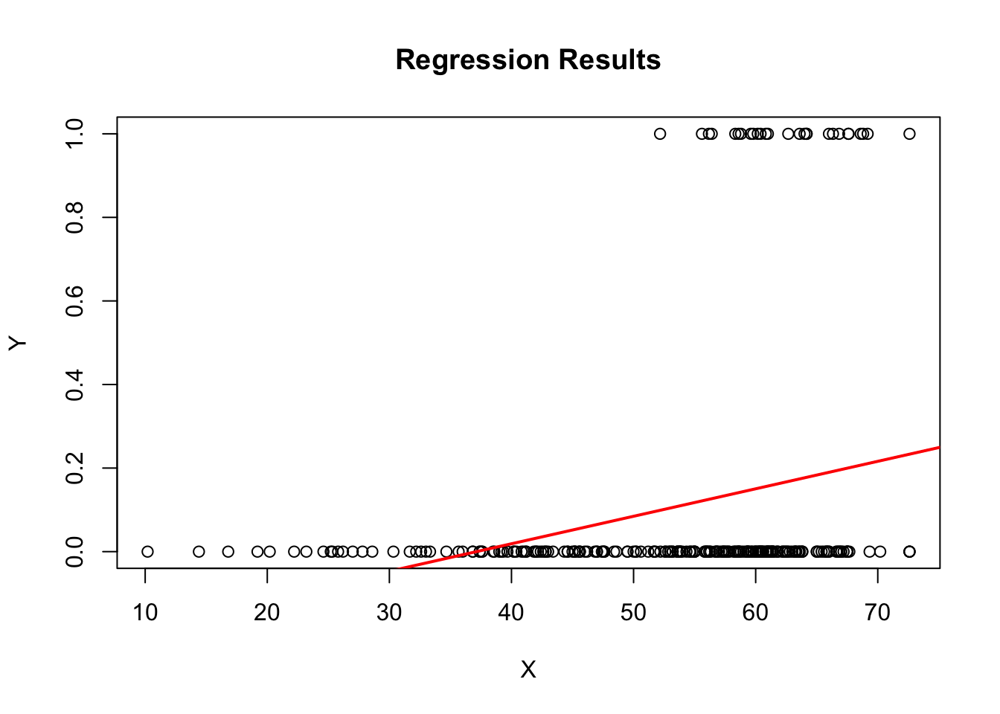
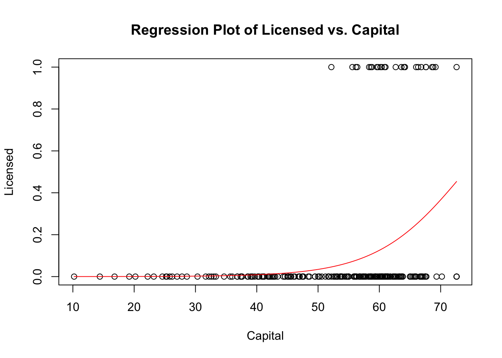
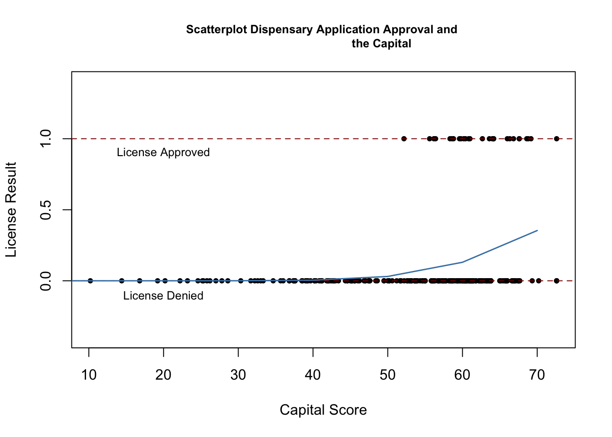
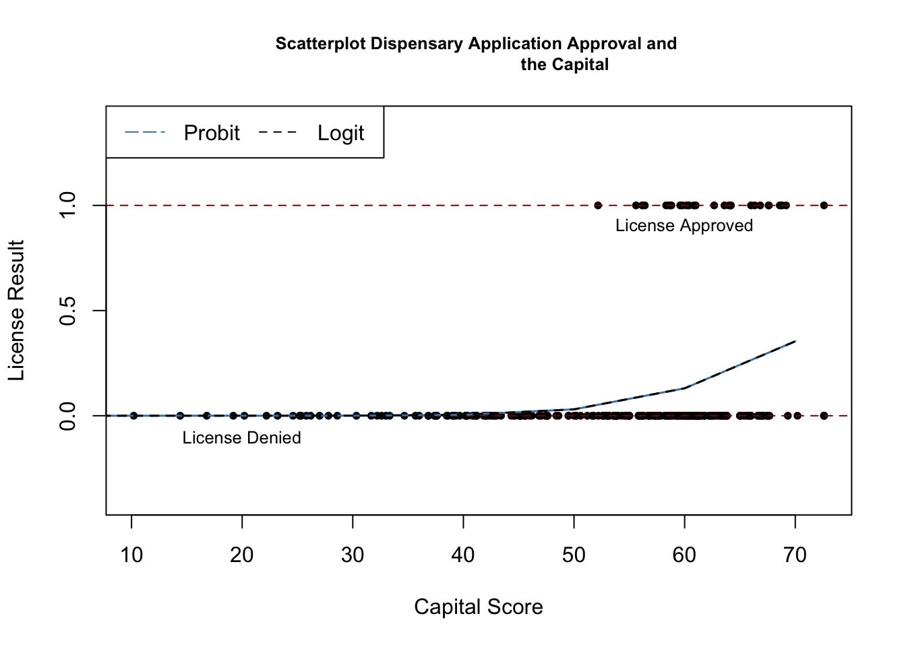

Code
library(tidyverse)
library(readxl)
library(summarytools)
library(ggplot2)
library(magrittr)
library(car)
library(AER)
library(stargazer)
library(knitr)
library(broom)
knitr::opts_chunk$set(echo = TRUE)Keith Martin
August 17, 2023
This dataset comprises information gathered from 387 applications submitted in Pennsylvania during 2016. These applications originated from various companies vying for licenses to operate dispensaries within the state.
Each entry in the dataset represents a company, and occasionally, there are multiple applications from the same company. These applications are evaluated across 16 distinct categories. These categories encompass factors such as diversity plans, operational timetables, qualifications, security protocols, transportation, storage, labeling, inventory management, diversion prevention, sanitation, record-keeping, historical context, capital investment, community engagement, site planning, and personal identification.
The evaluation scores across these categories are aggregated to form a total score, which has a maximum value of 800. Theoretically, a higher total score correlates with an increased likelihood of obtaining a license. However, upon reviewing the data, it becomes apparent that the companies with the highest scores do not always secure licenses. Conversely, some companies with lower scores do receive licenses. Moreover, specific categories can influence licensing outcomes, allowing companies with lower overall scores but strong performance in key categories to succeed.
This analysis focuses on investigating various regression models to understand the impact of a company’s capital score on their chances of obtaining a license. The legislative process emphasized prioritizing communities most adversely affected by the criminalization of Marijuana during the licensing allocation.
The analysis includes qualification scores as a variable. This enables a comparison between the significance of the diversity plan and qualification score. Qualification scores are also used to account for omitted variable bias.
The hypothesis is that capital will exhibit a statistically more significant relationship than the diversity plan in influencing the licensing outcome. Qualification is used as a quasi-control variable to assess whether the diversity plan’s impact on outcomes holds when the company is otherwise qualified.
It is anticipated that diversity plan significance levels will be lower compared to capital. The hypothesis postulates that capital directly influences the outcome of obtaining a license.
# A tibble: 10 × 22
phase dispens…¹ name diver…² opera…³ quali…⁴ secur…⁵ trans…⁶ storage label…⁷
<dbl> <chr> <chr> <dbl> <dbl> <dbl> <dbl> <dbl> <dbl> <dbl>
1 1 D-1001-17 BHS … 31 70.4 25.6 50.2 11.8 24.4 16.4
2 1 D-1003-17 Prim… 68 64.8 35.6 56.2 16 37.8 18.2
3 1 D-1004-17 Keen… 65 63.8 32.4 72.2 12.4 30.8 13.6
4 1 D-1006-17 Grow… 34 48 27.2 48.4 13 20.6 14.4
5 1 D-1007-17 Heal… 25 51.4 26.2 51.4 13.2 23.4 14.2
6 1 D-1009-17 Elem… 40 66 27.8 65.6 18.6 32.4 15.8
7 1 D-1010-17 420 … 60 29.6 21 32.6 9.6 16.2 9.6
8 1 D-1011-17 Pali… 38 48 31.6 56.8 6.2 26.4 16.6
9 1 D-1012-17 The … 32 24.8 29.2 56.4 15 26.2 14.6
10 1 D-1013-17 Elem… 40 66.4 31.4 65.6 18 32.6 17.2
# … with 12 more variables: inventory <dbl>, diversion <dbl>, sanitation <dbl>,
# recordkeeping <dbl>, history <dbl>, capital <dbl>, community <dbl>,
# siteplan <dbl>, personalid <dbl>, awarded <dbl>, licensed <dbl>,
# dispensaries <dbl>, and abbreviated variable names ¹dispensarynumber,
# ²diversityplan, ³operationaltimetable, ⁴qualifications, ⁵security,
# ⁶transportation, ⁷labelingThe data set includes various companies that applied for a dispensary license in 2016. There are 16 categories that are added up to a total score. The score is used to determine whether or not the company will receive a license to operate a dispensary.
# A tibble: 10 × 7
name diver…¹ quali…² secur…³ capital licen…⁴ awarded
<chr> <dbl> <dbl> <dbl> <dbl> <dbl> <dbl>
1 BHS Wellness, LLC 31 25.6 50.2 28.6 0 471
2 Prime Wellness of Pennsylvan… 68 35.6 56.2 67.2 0 644
3 Keen Meds, LLC 65 32.4 72.2 59.2 0 608.
4 Grow Ventures Penn, LLC 34 27.2 48.4 53.6 0 468.
5 Healing Hope, LLC 25 26.2 51.4 37.4 0 478.
6 Elemental Health Group, LLC 40 27.8 65.6 62.6 0 646.
7 420 Nature's Root 60 21 32.6 41.2 0 396.
8 PaliaTech PA, LLC 38 31.6 56.8 50 0 512.
9 The Natural Dispensary, LLC 32 29.2 56.4 51.8 0 492.
10 Elemental Health Group, LLC 40 31.4 65.6 56.2 0 618.
# … with abbreviated variable names ¹diversityplan, ²qualifications, ³security,
# ⁴licensed###original model
linear_model<-lm(licensed ~ capital, data = PA_Dispensary_License_Condensed)
### original probit model
model <- glm(licensed ~ capital, data = PA_Dispensary_License_Condensed, family = binomial(link="probit"))
###original logit model
model_logit <- glm(licensed ~ capital, data = PA_Dispensary_License_Condensed, family = binomial(link="logit"))
###Probit Model Plus Diversity Plan Regressor
model_diversity <- glm(licensed ~ capital + diversityplan, data = PA_Dispensary_License_Condensed, family = binomial(link = "probit"))
###Probit Model with Qualification Regressor
model_qualification <- glm (licensed ~ capital + qualifications, data = PA_Dispensary_License_Condensed, family = binomial(link = "probit"))
###Probit Model With All Regressots
model_all <- glm (licensed ~ capital + qualifications + diversityplan, data = PA_Dispensary_License_Condensed, family = binomial(link = "probit"))coefficients_df <- suppressWarnings(bind_rows(
mod1 =tidy(linear_model, conf.int = TRUE),
mod2 =tidy(model, conf.int = TRUE),
mod3 =tidy(model_logit, conf.int = TRUE),
mod4 =tidy(model_diversity, conf.int = TRUE),
mod5 =tidy(model_qualification, conf.int = TRUE),
mod6 =tidy(model_all, conf.int=TRUE)))| term | estimate | std.error | statistic | p.value | conf.low | conf.high |
|---|---|---|---|---|---|---|
| (Intercept) | -0.2442783 | 0.0852046 | -2.866962 | 0.0044991 | -0.4120918 | -0.0764647 |
| capital | 0.0065795 | 0.0015533 | 4.235692 | 0.0000321 | 0.0035201 | 0.0096388 |
| (Intercept) | -5.6223750 | 1.1633523 | -4.832909 | 0.0000013 | -8.1829818 | -3.5532529 |
| capital | 0.0749624 | 0.0190141 | 3.942471 | 0.0000806 | 0.0407410 | 0.1164120 |
| (Intercept) | -10.3084100 | 2.2333146 | -4.615745 | 0.0000039 | -15.1612780 | -6.4049083 |
| capital | 0.1394364 | 0.0359413 | 3.879565 | 0.0001046 | 0.0756969 | 0.2166748 |
| (Intercept) | -5.7371537 | 1.1491234 | -4.992635 | 0.0000006 | -8.2816391 | -3.6714647 |
| capital | 0.0660720 | 0.0194028 | 3.405288 | 0.0006609 | 0.0308188 | 0.1084331 |
| diversityplan | 0.0138857 | 0.0089170 | 1.557214 | 0.1194197 | -0.0038138 | 0.0317270 |
| (Intercept) | -7.5834522 | 1.4963448 | -5.067984 | 0.0000004 | -10.8197982 | -4.8749181 |
| capital | 0.0577678 | 0.0212039 | 2.724394 | 0.0064420 | 0.0183242 | 0.1026350 |
| qualifications | 0.0881670 | 0.0317759 | 2.774645 | 0.0055262 | 0.0279051 | 0.1554821 |
| (Intercept) | -7.6813219 | 1.4902407 | -5.154417 | 0.0000003 | -10.9230486 | -4.9693986 |
| capital | 0.0496580 | 0.0217109 | 2.287239 | 0.0221819 | 0.0093499 | 0.0954759 |
| qualifications | 0.0874564 | 0.0324421 | 2.695768 | 0.0070227 | 0.0260376 | 0.1556713 |
| diversityplan | 0.0130037 | 0.0094610 | 1.374459 | 0.1692991 | -0.0056912 | 0.0318210 |
I have included the results of the regression analysis above. I will continue with the analysis in the below setions.
# List of variables you want to summarize
vars_to_summarize <- c("capital", "diversityplan", "qualifications")
# Initialize an empty data frame to store the results
summary_table <- data.frame()
# Loop through each variable and calculate summary statistics
for (var in vars_to_summarize) {
summary_row <- data.frame(
Metric = c(paste0("sd_", var), paste0("max_", var), paste0("min_", var), paste0("avg_", var), paste0("med_", var), paste0("n_", var)),
Value = c(sd(PA_Dispensary_License_Condensed[[var]], na.rm = TRUE),
max(PA_Dispensary_License_Condensed[[var]], na.rm = TRUE),
min(PA_Dispensary_License_Condensed[[var]], na.rm = TRUE),
mean(PA_Dispensary_License_Condensed[[var]], na.rm = TRUE),
median(PA_Dispensary_License_Condensed[[var]], na.rm = TRUE),
sum(!is.na(PA_Dispensary_License_Condensed[[var]]))) # Count non-NA values
)
# Append the summary_row to the summary_table using rbind()
summary_table <- rbind(summary_table, summary_row)
}
# Print the resulting summary_table
print(summary_table) Metric Value
1 sd_capital 12.232781
2 max_capital 72.600000
3 min_capital 10.200000
4 avg_capital 53.476693
5 med_capital 57.330000
6 n_capital 251.000000
7 sd_diversityplan 15.354646
8 max_diversityplan 75.000000
9 min_diversityplan 5.000000
10 avg_diversityplan 44.917313
11 med_diversityplan 45.000000
12 n_diversityplan 387.000000
13 sd_qualifications 6.101741
14 max_qualifications 45.000000
15 min_qualifications 8.200000
16 avg_qualifications 30.757080
17 med_qualifications 31.600000
18 n_qualifications 387.000000Additionally, I have included the summary statistics above. As the table shows, diversity plan has a slightly larger variation in standard deviation when compared to the other two variables. The summary statistics provide the background for the below regression analysis.
Estimate Std. Error t value Pr(>|t|)
(Intercept) -0.244278261 0.085204568 -2.866962 4.499059e-03
capital 0.006579464 0.001553339 4.235692 3.209303e-05
In summary, a T-value of 4.235692 for the independent variable capital in a simple regression with the dependent variable licensed indicates a strong relationship between the variables, and the relationship is statistically significant based on the chosen level of significance. In this case, the p-value is extremely small and less than one 1%. The chosen level of significance for this case would be P<.05. More specifically, if the p-value is below the predetermined significance level, it suggests that the probability of observing the results under the null hypothesis are very low. In such cases, it is generally concluded that there is a statistically significant relationship in the data.
For each unit increase in the capital variable, there is an estimated increase of approximately 0.006579464 in the probability or likelihood of the licensed variable being equal to 1, assuming all other factors are held constant.
In plain English, this means that as the capital variable increases, the estimated effect is a slight increase in the probability of having a value of 1 for the licensed variable. However, since the coefficient is very small (0.006579464), the practical significance of this effect may be limited.
Since the dependent variable is a dummy (binary) variable, the regression line does not fit that nicely on the plot. I did some additional research and found that a curve is more fitting for this type of variable. ## Regression Analysis With Binary Variable
### Regression Graph for Dummy Dependent Variable
model <- glm(licensed ~ capital, data = PA_Dispensary_License_Condensed, family = binomial)
plot(PA_Dispensary_License_Condensed$capital, PA_Dispensary_License_Condensed$licensed, main = "Regression Plot of Licensed vs. Capital", xlab = "Capital", ylab = "Licensed")
### This code adds a curve instead of a standard line(abline) for regression of dummy dependent variables
curve(predict(model, data.frame(capital = x), type = "response"), add = TRUE, col = "red")
In the above plot, I used a general linear model to predict the curve of the dummy variable. This is a much cleaner plot that the original regression line above. This more closely illustrates the relationship between capital score and licensing outcome.
z test of coefficients:
Estimate Std. Error z value Pr(>|z|)
(Intercept) -5.622375 0.930207 -6.0442 1.501e-09 ***
capital 0.074962 0.015349 4.8839 1.040e-06 ***
---
Signif. codes: 0 '***' 0.001 '**' 0.01 '*' 0.05 '.' 0.1 ' ' 1P(License|Capital) = Φ(-5.62 +.075Capital Score)
In the context of the provided results, where “capital” is listed as an independent variable with a significant coefficient estimate, it suggests that there is a statistically meaningful relationship between the “capital” variable and the dependent variable being analyzed. The analysis indicates that changes in the “capital” variable are associated with changes in the outcome of interest.
Since the coefficient estimate for “capital” is positive (approximately 0.074962), it implies that an increase in the value of the “capital” variable is associated with an increase in the value of the dependent variable, licensed, all else being equal. In other words, there is a positive correlation between the “capital” variable and the licensing outcome being studied.
The fact that the coefficient for “capital” is statistically significant (indicated by the low p-value) suggests that this relationship is unlikely to be due to random chance. It’s important to note that statistical significance does not necessarily imply a causal relationship; it only indicates that there is a strong association between the two variables in the analyzed data.
Without more specific context about the nature of the variables and the analysis being conducted, it’s challenging to provide a precise interpretation of how “capital” relates to “license.” However, based on the information provided, it can be inferred that higher values of the “capital” variable are predictive of higher values of the dependent variable, and this relationship is supported by the statistical analysis.
plot(x = PA_Dispensary_License_Condensed$capital,
y = PA_Dispensary_License_Condensed$licensed,
main = "Scatterplot Dispensary Application Approval and
the Capital",
xlab = "Capital Score",
ylab = "License Result",
pch = 20,
ylim = c(-0.4, 1.4),
cex.main = 0.8)
# add horizontal dashed lines and text
abline(h = 1, lty = 2, col = "darkred")
abline(h = 0, lty = 2, col = "darkred")
text(20, 0.9, cex = 0.8, "License Approved")
text(20, -0.1, cex= 0.8, "License Denied")
### add a regression line
x <- seq(0, 70, 10)
y <- predict(model, list(capital = x), type = "response")
lines(x, y, lwd = 1.5, col = "steelblue")
The above graph shows that the probit model is similar to general linear model above. This is particularly useful when the relationship between the independent variables(Captial) and the probability of the binary outcome occurring is not linear, but rather follows a cumulative distribution function (CDF), specifically the cumulative normal distribution function.
2
0.2234556 We find that an increase in the capital score from 60 to 70 is predicted to increase the probability of denial by approximately 22.3% This further supports the initial hypothesis that an increase in the capital score increases the chances of a compoany receiving a dispensary license.
z test of coefficients:
Estimate Std. Error z value Pr(>|z|)
(Intercept) -10.308410 1.844778 -5.5879 2.299e-08 ***
capital 0.139436 0.029845 4.6720 2.983e-06 ***
---
Signif. codes: 0 '***' 0.001 '**' 0.01 '*' 0.05 '.' 0.1 ' ' 1P(Licensed = 1| Capital) = F(-10.3 + .13Capital)
Intercept (Constant Term):
Estimate: The estimated intercept (constant term) is -10.308410. Std. Error: The standard error associated with the intercept estimate is 1.844778.
z value: The calculated z value for the intercept is -5.5879. Pr(>|z|): The p-value associated with the z value is extremely small (2.299e-08), indicating that the intercept is statistically significant. This suggests that the log-odds of the outcome being “licensed” are significantly different from zero. Capital:
Estimate: The estimated coefficient for the variable “capital” is 0.139436.
Std. Error: The standard error associated with the coefficient estimate is 0.029845.
z value: The calculated z value for the coefficient is 4.6720. Pr(>|z|): The p-value associated with the z value is very small (2.983e-06), indicating that the “capital” variable is statistically significant. This suggests that for a one-unit increase in the “capital” variable, the log-odds of the outcome being “licensed” increases by 0.139436 units.
The “Signif. codes” section provides a quick interpretation of the significance levels:
In summary, based on this logistic regression model, there is strong evidence to suggest that the “capital” variable significantly influences the likelihood of being “licensed,” while the intercept (constant term) also plays a significant role in predicting the outcome.
### Plot Logit Regression
plot(x = PA_Dispensary_License_Condensed$capital,
y = PA_Dispensary_License_Condensed$licensed,
main = "Scatterplot Dispensary Application Approval and
the Capital",
xlab = "Capital Score",
ylab = "License Result",
pch = 20,
ylim = c(-0.4, 1.4),
cex.main = 0.8)
# add horizontal dashed lines and text
abline(h = 1, lty = 2, col = "darkred")
abline(h = 0, lty = 2, col = "darkred")
text(60, 0.9, cex = 0.8, "License Approved")
text(20, -0.1, cex= 0.8, "License Denied")
### add a regression line
x <- seq(0, 70, 10)
y_probit <- predict(model, list(capital = x), type = "response")
y_logit <- predict(model, list(capital = x), type = "response")
### Add both regression Lines
lines(x, y_probit, lwd = 1.5, col = "steelblue")
lines(x, y_logit, lwd = 1.5, col = "black", lty = 2)
###Legend
legend("topleft",
horiz = TRUE,
legend = c("Probit", "Logit"),
col = c("steelblue", "black"),
lty = c(5, 2))
As you can see from the above model, the logit and probit model are almost the exact same. A logit model, also known as a logistic regression model, is a statistical method used to model the relationship between one or more independent variables and a binary dependent variable. In a logistic regression, the coefficients β are estimated using maximum likelihood estimation. These coefficients provide information about the direction and strength of the relationship between each predictor variable and the probability of the binary outcome occurring. In the below analysis, I will discuss the specific values of the logit model.
z test of coefficients:
Estimate Std. Error z value Pr(>|z|)
(Intercept) -5.737154 0.858463 -6.6831 2.340e-11 ***
capital 0.066072 0.015441 4.2791 1.877e-05 ***
diversityplan 0.013886 0.008202 1.6930 0.09046 .
---
Signif. codes: 0 '***' 0.001 '**' 0.01 '*' 0.05 '.' 0.1 ' ' 1Linear hypothesis test
Hypothesis:
capital = 0
diversityplan = 0
Model 1: restricted model
Model 2: licensed ~ capital + diversityplan
Res.Df Df Chisq Pr(>Chisq)
1 250
2 248 2 18.124 0.000116 ***
---
Signif. codes: 0 '***' 0.001 '**' 0.01 '*' 0.05 '.' 0.1 ' ' 1P(License|Capital+Diversityplan) = Φ(-5.62 +.066Capital Score +.013Diversityplan) ** Not statistically significant in Diversity Plan
z Test of Coefficients:
(Intercept) coefficient: The coefficient for the intercept is -5.737154. The corresponding standard error is 0.858463. The z value (coefficient divided by its standard error) is -6.6831. The p-value associated with this z value is extremely small (2.340e-11), indicated by ‘’, suggesting that the intercept is significantly different from zero. capital coefficient: The coefficient for the capital predictor variable is 0.066072. The standard error is 0.015441. The z value is 4.2791, and the p-value is also very small (1.877e-05), ’’, indicating that the capital predictor is statistically significant. diversityplan coefficient: The coefficient for the diversityplan predictor is 0.013886, and its standard error is 0.008202. The z value is 1.6930, and the associated p-value is 0.09046, indicated by a ‘.’. This suggests that the diversityplan predictor is not statistically significant at the conventional significance levels (alpha = 0.05). Linear Hypothesis Test: The linear hypothesis test is evaluating the joint significance of the capital and diversityplan predictors by comparing two models:
Model 1: Restricted model without capital and diversityplan. Model 2: Full model with capital and diversityplan. The test statistic (Chi-square) is 18.124 with 2 degrees of freedom. The p-value associated with this test statistic is 0.000116, ’***’, indicating strong evidence to reject the null hypothesis. This suggests that the joint inclusion of capital and diversityplan significantly improves the fit of the model compared to a model without these predictors.
In summary, the z test of coefficients indicates that the intercept and the capital predictor are both statistically significant. The diversityplan predictor, although not statistically significant by itself, contributes to the overall model fit in the linear hypothesis test when combined with the capital predictor.
z test of coefficients:
Estimate Std. Error z value Pr(>|z|)
(Intercept) -7.583452 1.223928 -6.1960 5.792e-10 ***
capital 0.057768 0.018528 3.1179 0.0018217 **
qualifications 0.088167 0.025949 3.3977 0.0006795 ***
---
Signif. codes: 0 '***' 0.001 '**' 0.01 '*' 0.05 '.' 0.1 ' ' 1Linear hypothesis test
Hypothesis:
capital = 0
qualifications = 0
Model 1: restricted model
Model 2: licensed ~ capital + qualifications
Res.Df Df Chisq Pr(>Chisq)
1 250
2 248 2 19.719 5.225e-05 ***
---
Signif. codes: 0 '***' 0.001 '**' 0.01 '*' 0.05 '.' 0.1 ' ' 1P(License|Capital+Qualification) = Φ(-5.62 +.057Capital Score +.088Qualification)
Z Test of Coefficients:
Intercept: The coefficient for the intercept is -7.583452. This represents the expected log-odds of the licensed variable when both capital and qualifications are zero. The negative coefficient suggests that as the predictor values increase, the log-odds of being licensed decrease.
capital: The coefficient for the capital predictor is 0.057768. It is statistically significant as indicated by the ’**’ symbol. This means that a unit increase in capital is associated with a 0.057768 increase in the log-odds of being licensed, holding other variables constant.
qualifications: The coefficient for the qualifications predictor is 0.088167. It is statistically significant (’***’), indicating that a unit increase in qualifications is associated with a 0.088167 increase in the log-odds of being licensed, holding other variables constant.
Linear Hypothesis Test: The linear hypothesis test evaluates the joint significance of capital and qualifications in the model:
Model 1: Restricted model without capital and qualifications. Model 2: Full model with capital and qualifications. The test statistic (Chi-square) is 19.719, and the associated p-value is 5.225e-05 (’***’). This p-value is much smaller than the significance level of 0.05, indicating strong evidence to reject the null hypothesis. This suggests that including both capital and qualifications significantly improves the model’s fit compared to a model without these predictors.
In summary, both capital and qualifications are individually significant predictors. Additionally, the linear hypothesis test indicates that the joint inclusion of these predictors significantly enhances the model’s performance, further supporting their importance in explaining the variability in the response variable licensed.
z test of coefficients:
Estimate Std. Error z value Pr(>|z|)
(Intercept) -7.6813219 1.1612710 -6.6146 3.726e-11 ***
capital 0.0496580 0.0195072 2.5456 0.01091 *
qualifications 0.0874564 0.0276150 3.1670 0.00154 **
diversityplan 0.0130037 0.0090475 1.4373 0.15064
---
Signif. codes: 0 '***' 0.001 '**' 0.01 '*' 0.05 '.' 0.1 ' ' 1Linear hypothesis test
Hypothesis:
capital = 0
diversityplan = 0
qualifications = 0
Model 1: restricted model
Model 2: licensed ~ capital + qualifications + diversityplan
Res.Df Df Chisq Pr(>Chisq)
1 250
2 247 3 21.313 9.064e-05 ***
---
Signif. codes: 0 '***' 0.001 '**' 0.01 '*' 0.05 '.' 0.1 ' ' 1In this case:
The intercept has a significantly negative coefficient, indicating that when all predictor variables are zero, the log-odds of being licensed is significantly negative. capital has a positive coefficient with a p-value of 0.01091, which is less than 0.05. This suggests that an increase in capital is associated with a higher likelihood of being licensed.
Qualifications has a positive coefficient with a p-value of 0.00154, which is less than 0.05. This suggests that higher qualifications are associated with a higher likelihood of being licensed.
Diversityplan has a positive coefficient, but its p-value (0.15064) is greater than 0.05. This suggests that diversityplan might not be statistically significant in predicting licensing status.
Linear Hypothesis Test: The linearHypothesis function tests the joint significance of multiple coefficients by comparing a restricted model (where those coefficients are restricted to zero) to the full model.
In this case: The null hypothesis is that all three coefficients (capital, diversityplan, and qualifications) are simultaneously equal to zero.
The p-value associated with the hypothesis test (9.064e-05) is less than 0.05, indicating that at least one of these coefficients is significantly different from zero when considered together.
This suggests that at least one of these three variables (capital, diversityplan, qualifications) is important for predicting the licensing status when all three are considered together.
The significance tests like these provide insights into whether the coefficients are likely different from zero, but they do not provide information about the strength or practical importance of these effects.
rob_se<- list(sqrt(diag(vcovHC(linear_model, type = "HC1"))),
sqrt(diag(vcovHC(model, type = "HC1"))),
sqrt(diag(vcovHC(model_logit, type = "HC1"))),
sqrt(diag(vcovHC(model_diversity, type = "HC1"))),
sqrt(diag(vcovHC(model_qualification, type = "HC1"))),
sqrt(diag(vcovHC(model_all, type = "HC1"))))| Dependent variable: | ||||||
| licensed | ||||||
| OLS | probit | logistic | probit | |||
| (1) | (2) | (3) | (4) | (5) | (6) | |
| capital | 0.007*** | 0.075*** | 0.139*** | 0.066*** | 0.058*** | 0.050** |
| (0.001) | (0.015) | (0.030) | (0.015) | (0.019) | (0.020) | |
| diversityplan | 0.014* | 0.013 | ||||
| (0.008) | (0.009) | |||||
| qualifications | 0.088*** | 0.087*** | ||||
| (0.026) | (0.028) | |||||
| Constant | -0.244*** | -5.622*** | -10.308*** | -5.737*** | -7.583*** | -7.681*** |
| (0.056) | (0.930) | (1.845) | (0.858) | (1.224) | (1.161) | |
| Observations | 251 | 251 | 251 | 251 | 251 | 251 |
| R2 | 0.067 | |||||
| Adjusted R2 | 0.063 | |||||
| Log Likelihood | -72.585 | -72.951 | -71.402 | -68.254 | -67.323 | |
| Akaike Inf. Crit. | 149.170 | 149.902 | 148.805 | 142.508 | 142.647 | |
| Residual Std. Error | 0.300 (df = 249) | |||||
| F Statistic | 17.941*** (df = 1; 249) | |||||
| Note: | p<0.1; p<0.05; p<0.01 | |||||
OLS (Ordinary Least Squares):
OLS assumes that the dependent variable is continuous and normally distributed. R-squared indicates the proportion of variance explained by the model. A relatively low R-squared (0.067) suggests that the linear relationship might not capture all the complexities of the data. Since the dependent variable “licensed” is likely binary (indicating presence or absence), OLS might not be the most suitable choice.
Probit Models (Two Instances):
Probit models are used for binary outcomes, assuming that the latent variable follows a normal distribution. Log Likelihood values (-72.951 and -68.254) suggest that these models fit the data relatively well, but a lower value is preferred. AIC values (149.902 and 142.508) indicate that the second probit model has a better balance between fit and complexity compared to the first one. Probit models provide probabilities of being “licensed,” assuming a normal distribution of the underlying latent variable.
Logistic (Logit) Model:
Logistic models are widely used for binary outcomes, assuming a logistic distribution of the latent variable. The log-likelihood value (-71.402) suggests a reasonably good fit to the data.
The AIC value (148.805) indicates that the logistic model provides a balance between model fit and complexity. Logistic models provide probabilities of being “licensed” that are bounded between 0 and 1.
In summary, the findings align with the previously stated hypothesis, indicating that the diversity plan score bears lesser importance in comparison to both capital and qualification scores. This outcome presents a contradiction to the initial aim of fostering social equity. While the diversity plan does exert some impact on the overall model, its statistical significance pales when contrasted with the other variables.
---
title: "Keith Martin Project 2"
author: "Keith Martin"
desription: "Regression Analysis on Dispensary Licensing"
date: "08/17/2023"
format:
html:
toc: true
code-fold: true
code-copy: true
code-tools: true
categories:
- project2
- dataset
- ggplot2
- regression
---
```{r}
#| label: setup
#| warning: false
library(tidyverse)
library(readxl)
library(summarytools)
library(ggplot2)
library(magrittr)
library(car)
library(AER)
library(stargazer)
library(knitr)
library(broom)
knitr::opts_chunk$set(echo = TRUE)
```
## Introduction
This dataset comprises information gathered from 387 applications submitted in Pennsylvania during 2016. These applications originated from various companies vying for licenses to operate dispensaries within the state.
Each entry in the dataset represents a company, and occasionally, there are multiple applications from the same company. These applications are evaluated across 16 distinct categories. These categories encompass factors such as diversity plans, operational timetables, qualifications, security protocols, transportation, storage, labeling, inventory management, diversion prevention, sanitation, record-keeping, historical context, capital investment, community engagement, site planning, and personal identification.
The evaluation scores across these categories are aggregated to form a total score, which has a maximum value of 800. Theoretically, a higher total score correlates with an increased likelihood of obtaining a license. However, upon reviewing the data, it becomes apparent that the companies with the highest scores do not always secure licenses. Conversely, some companies with lower scores do receive licenses. Moreover, specific categories can influence licensing outcomes, allowing companies with lower overall scores but strong performance in key categories to succeed.
This analysis focuses on investigating various regression models to understand the impact of a company's capital score on their chances of obtaining a license. The legislative process emphasized prioritizing communities most adversely affected by the criminalization of Marijuana during the licensing allocation.
The analysis includes qualification scores as a variable. This enables a comparison between the significance of the diversity plan and qualification score. Qualification scores are also used to account for omitted variable bias.
The hypothesis is that capital will exhibit a statistically more significant relationship than the diversity plan in influencing the licensing outcome. Qualification is used as a quasi-control variable to assess whether the diversity plan's impact on outcomes holds when the company is otherwise qualified.
It is anticipated that diversity plan significance levels will be lower compared to capital. The hypothesis postulates that capital directly influences the outcome of obtaining a license.
## Reading The Data
```{r}
PA_Dispensary_License_Data_tab <- read_excel("~/Downloads/PA Dispensary License Data.tab.xlsx")
head(PA_Dispensary_License_Data_tab, 10)
```
The data set includes various companies that applied for a dispensary license in 2016. There are 16 categories that are added up to a total score. The score is used to determine whether or not the company will receive a license to operate a dispensary.
## Cleaning Data
```{r}
PA_Dispensary_License_Condensed<-PA_Dispensary_License_Data_tab %>%
select(name, diversityplan, qualifications, security, capital,licensed, awarded)
head(PA_Dispensary_License_Condensed, 10)
```
## Regression Models
```{r}
###original model
linear_model<-lm(licensed ~ capital, data = PA_Dispensary_License_Condensed)
### original probit model
model <- glm(licensed ~ capital, data = PA_Dispensary_License_Condensed, family = binomial(link="probit"))
###original logit model
model_logit <- glm(licensed ~ capital, data = PA_Dispensary_License_Condensed, family = binomial(link="logit"))
###Probit Model Plus Diversity Plan Regressor
model_diversity <- glm(licensed ~ capital + diversityplan, data = PA_Dispensary_License_Condensed, family = binomial(link = "probit"))
###Probit Model with Qualification Regressor
model_qualification <- glm (licensed ~ capital + qualifications, data = PA_Dispensary_License_Condensed, family = binomial(link = "probit"))
###Probit Model With All Regressots
model_all <- glm (licensed ~ capital + qualifications + diversityplan, data = PA_Dispensary_License_Condensed, family = binomial(link = "probit"))
```
```{r}
coefficients_df <- suppressWarnings(bind_rows(
mod1 =tidy(linear_model, conf.int = TRUE),
mod2 =tidy(model, conf.int = TRUE),
mod3 =tidy(model_logit, conf.int = TRUE),
mod4 =tidy(model_diversity, conf.int = TRUE),
mod5 =tidy(model_qualification, conf.int = TRUE),
mod6 =tidy(model_all, conf.int=TRUE)))
```
```{r}
#Print the coefficients table using kable
kable(coefficients_df, caption = "Regresssion Model Coefficient Results")
```
I have included the results of the regression analysis above. I will continue with the analysis in the below setions.
```{r}
# List of variables you want to summarize
vars_to_summarize <- c("capital", "diversityplan", "qualifications")
# Initialize an empty data frame to store the results
summary_table <- data.frame()
# Loop through each variable and calculate summary statistics
for (var in vars_to_summarize) {
summary_row <- data.frame(
Metric = c(paste0("sd_", var), paste0("max_", var), paste0("min_", var), paste0("avg_", var), paste0("med_", var), paste0("n_", var)),
Value = c(sd(PA_Dispensary_License_Condensed[[var]], na.rm = TRUE),
max(PA_Dispensary_License_Condensed[[var]], na.rm = TRUE),
min(PA_Dispensary_License_Condensed[[var]], na.rm = TRUE),
mean(PA_Dispensary_License_Condensed[[var]], na.rm = TRUE),
median(PA_Dispensary_License_Condensed[[var]], na.rm = TRUE),
sum(!is.na(PA_Dispensary_License_Condensed[[var]]))) # Count non-NA values
)
# Append the summary_row to the summary_table using rbind()
summary_table <- rbind(summary_table, summary_row)
}
# Print the resulting summary_table
print(summary_table)
```
Additionally, I have included the summary statistics above. As the table shows, diversity plan has a slightly larger variation in standard deviation when compared to the other two variables. The summary statistics provide the background for the below regression analysis.
```{r}
linear_model<-lm(licensed ~ capital, data = PA_Dispensary_License_Condensed)
summary(linear_model)$coefficient
### Have to plot it differently
plot(PA_Dispensary_License_Condensed$capital, PA_Dispensary_License_Condensed$licensed, main = "Regression Results", xlab = "X", ylab = "Y")
abline(linear_model, col = "red", lwd = 2)
```
In summary, a T-value of 4.235692 for the independent variable capital in a simple regression with the dependent variable licensed indicates a strong relationship between the variables, and the relationship is statistically significant based on the chosen level of significance. In this case, the p-value is extremely small and less than one 1%. The chosen level of significance for this case would be P<.05. More specifically, if the p-value is below the predetermined significance level, it suggests that the probability of observing the results under the null hypothesis are very low. In such cases, it is generally concluded that there is a statistically significant relationship in the data.
For each unit increase in the capital variable, there is an estimated increase of approximately 0.006579464 in the probability or likelihood of the licensed variable being equal to 1, assuming all other factors are held constant.
In plain English, this means that as the capital variable increases, the estimated effect is a slight increase in the probability of having a value of 1 for the licensed variable. However, since the coefficient is very small (0.006579464), the practical significance of this effect may be limited.
Since the dependent variable is a dummy (binary) variable, the regression line does not fit that nicely on the plot. I did some additional research and found that a curve is more fitting for this type of variable.
## Regression Analysis With Binary Variable
```{r}
### Regression Graph for Dummy Dependent Variable
model <- glm(licensed ~ capital, data = PA_Dispensary_License_Condensed, family = binomial)
plot(PA_Dispensary_License_Condensed$capital, PA_Dispensary_License_Condensed$licensed, main = "Regression Plot of Licensed vs. Capital", xlab = "Capital", ylab = "Licensed")
### This code adds a curve instead of a standard line(abline) for regression of dummy dependent variables
curve(predict(model, data.frame(capital = x), type = "response"), add = TRUE, col = "red")
```
In the above plot, I used a general linear model to predict the curve of the dummy variable. This is a much cleaner plot that the original regression line above. This more closely illustrates the relationship between capital score and licensing outcome.
# Multivariate Regression
```{r}
### Original Model Probit
model <- glm(licensed ~ capital, data = PA_Dispensary_License_Condensed, family = binomial(link="probit"))
coeftest(model, vcov. = vcovHC, type = "HC1")
```
P(License|Capital) = Φ(-5.62 +.075Capital Score)
In the context of the provided results, where "capital" is listed as an independent variable with a significant coefficient estimate, it suggests that there is a statistically meaningful relationship between the "capital" variable and the dependent variable being analyzed. The analysis indicates that changes in the "capital" variable are associated with changes in the outcome of interest.
Since the coefficient estimate for "capital" is positive (approximately 0.074962), it implies that an increase in the value of the "capital" variable is associated with an increase in the value of the dependent variable, licensed, all else being equal. In other words, there is a positive correlation between the "capital" variable and the licensing outcome being studied.
The fact that the coefficient for "capital" is statistically significant (indicated by the low p-value) suggests that this relationship is unlikely to be due to random chance. It's important to note that statistical significance does not necessarily imply a causal relationship; it only indicates that there is a strong association between the two variables in the analyzed data.
Without more specific context about the nature of the variables and the analysis being conducted, it's challenging to provide a precise interpretation of how "capital" relates to "license." However, based on the information provided, it can be inferred that higher values of the "capital" variable are predictive of higher values of the dependent variable, and this relationship is supported by the statistical analysis.
```{r}
plot(x = PA_Dispensary_License_Condensed$capital,
y = PA_Dispensary_License_Condensed$licensed,
main = "Scatterplot Dispensary Application Approval and
the Capital",
xlab = "Capital Score",
ylab = "License Result",
pch = 20,
ylim = c(-0.4, 1.4),
cex.main = 0.8)
# add horizontal dashed lines and text
abline(h = 1, lty = 2, col = "darkred")
abline(h = 0, lty = 2, col = "darkred")
text(20, 0.9, cex = 0.8, "License Approved")
text(20, -0.1, cex= 0.8, "License Denied")
### add a regression line
x <- seq(0, 70, 10)
y <- predict(model, list(capital = x), type = "response")
lines(x, y, lwd = 1.5, col = "steelblue")
```
The above graph shows that the probit model is similar to general linear model above. This is particularly useful when the relationship between the independent variables(Captial) and the probability of the binary outcome occurring is not linear, but rather follows a cumulative distribution function (CDF), specifically the cumulative normal distribution function.
```{r}
### Predictions with Capital 60 to 70
new_data <- data.frame(capital = c(60, 70)) # Create a data frame with the 'capital' values you want to predict for
predictions <- predict(model, newdata = new_data, type = "response") # Use "response" for binary outcome prediction
diff(predictions)
```
We find that an increase in the capital score from 60 to 70 is predicted to increase the probability of denial by approximately 22.3% This further supports the initial hypothesis that an increase in the capital score increases the chances of a compoany receiving a dispensary license.
```{r}
### Original Model Logit
model_logit <- glm(licensed ~ capital, data = PA_Dispensary_License_Condensed, family = binomial(link="logit"))
coeftest(model_logit, vcov. = vcovHC, type = "HC1")
```
P(Licensed = 1| Capital) = F(-10.3 + .13Capital)
Intercept (Constant Term):
Estimate: The estimated intercept (constant term) is -10.308410.
Std. Error: The standard error associated with the intercept estimate is 1.844778.
z value: The calculated z value for the intercept is -5.5879.
Pr(>|z|): The p-value associated with the z value is extremely small (2.299e-08), indicating that the intercept is statistically significant. This suggests that the log-odds of the outcome being "licensed" are significantly different from zero.
Capital:
Estimate: The estimated coefficient for the variable "capital" is 0.139436.
Std. Error: The standard error associated with the coefficient estimate is 0.029845.
z value: The calculated z value for the coefficient is 4.6720.
Pr(>|z|): The p-value associated with the z value is very small (2.983e-06), indicating that the "capital" variable is statistically significant. This suggests that for a one-unit increase in the "capital" variable, the log-odds of the outcome being "licensed" increases by 0.139436 units.
The "Signif. codes" section provides a quick interpretation of the significance levels:
In summary, based on this logistic regression model, there is strong evidence to suggest that the "capital" variable significantly influences the likelihood of being "licensed," while the intercept (constant term) also plays a significant role in predicting the outcome.
```{r}
### Plot Logit Regression
plot(x = PA_Dispensary_License_Condensed$capital,
y = PA_Dispensary_License_Condensed$licensed,
main = "Scatterplot Dispensary Application Approval and
the Capital",
xlab = "Capital Score",
ylab = "License Result",
pch = 20,
ylim = c(-0.4, 1.4),
cex.main = 0.8)
# add horizontal dashed lines and text
abline(h = 1, lty = 2, col = "darkred")
abline(h = 0, lty = 2, col = "darkred")
text(60, 0.9, cex = 0.8, "License Approved")
text(20, -0.1, cex= 0.8, "License Denied")
### add a regression line
x <- seq(0, 70, 10)
y_probit <- predict(model, list(capital = x), type = "response")
y_logit <- predict(model, list(capital = x), type = "response")
### Add both regression Lines
lines(x, y_probit, lwd = 1.5, col = "steelblue")
lines(x, y_logit, lwd = 1.5, col = "black", lty = 2)
###Legend
legend("topleft",
horiz = TRUE,
legend = c("Probit", "Logit"),
col = c("steelblue", "black"),
lty = c(5, 2))
```
As you can see from the above model, the logit and probit model are almost the exact same. A logit model, also known as a logistic regression model, is a statistical method used to model the relationship between one or more independent variables and a binary dependent variable. In a logistic regression, the coefficients β are estimated using maximum likelihood estimation. These coefficients provide information about the direction and strength of the relationship between each predictor variable and the probability of the binary outcome occurring. In the below analysis, I will discuss the specific values of the logit model.
```{r}
### Multi-Variate Model with Diversity
model_diversity <- glm(licensed ~ capital + diversityplan, data = PA_Dispensary_License_Condensed, family = binomial(link = "probit"))
coeftest(model_diversity, vcov. = vcovHC, type = "HC1")
linearHypothesis(model_diversity, c("capital=0", "diversityplan=0"), white.adjust = "hc1")
```
P(License|Capital+Diversityplan) = Φ(-5.62 +.066Capital Score +.013Diversityplan) ** Not statistically significant in Diversity Plan
z Test of Coefficients:
(Intercept) coefficient: The coefficient for the intercept is -5.737154. The corresponding standard error is 0.858463. The z value (coefficient divided by its standard error) is -6.6831. The p-value associated with this z value is extremely small (2.340e-11), indicated by '***', suggesting that the intercept is significantly different from zero.
capital coefficient: The coefficient for the capital predictor variable is 0.066072. The standard error is 0.015441. The z value is 4.2791, and the p-value is also very small (1.877e-05), '***', indicating that the capital predictor is statistically significant.
diversityplan coefficient: The coefficient for the diversityplan predictor is 0.013886, and its standard error is 0.008202. The z value is 1.6930, and the associated p-value is 0.09046, indicated by a '.'. This suggests that the diversityplan predictor is not statistically significant at the conventional significance levels (alpha = 0.05).
Linear Hypothesis Test:
The linear hypothesis test is evaluating the joint significance of the capital and diversityplan predictors by comparing two models:
Model 1: Restricted model without capital and diversityplan.
Model 2: Full model with capital and diversityplan.
The test statistic (Chi-square) is 18.124 with 2 degrees of freedom. The p-value associated with this test statistic is 0.000116, '***', indicating strong evidence to reject the null hypothesis. This suggests that the joint inclusion of capital and diversityplan significantly improves the fit of the model compared to a model without these predictors.
In summary, the z test of coefficients indicates that the intercept and the capital predictor are both statistically significant. The diversityplan predictor, although not statistically significant by itself, contributes to the overall model fit in the linear hypothesis test when combined with the capital predictor.
```{r}
### general linear model with qualifications
model_qualification <- glm (licensed ~ capital + qualifications, data = PA_Dispensary_License_Condensed, family = binomial(link = "probit"))
coeftest(model_qualification, vcov. = vcovHC, type = "HC1")
linearHypothesis(model_qualification, c("capital=0", "qualifications=0"), white.adjust = "hc1")
```
P(License|Capital+Qualification) = Φ(-5.62 +.057Capital Score +.088Qualification)
Z Test of Coefficients:
Intercept: The coefficient for the intercept is -7.583452. This represents the expected log-odds of the licensed variable when both capital and qualifications are zero. The negative coefficient suggests that as the predictor values increase, the log-odds of being licensed decrease.
capital: The coefficient for the capital predictor is 0.057768. It is statistically significant as indicated by the '**' symbol. This means that a unit increase in capital is associated with a 0.057768 increase in the log-odds of being licensed, holding other variables constant.
qualifications: The coefficient for the qualifications predictor is 0.088167. It is statistically significant ('***'), indicating that a unit increase in qualifications is associated with a 0.088167 increase in the log-odds of being licensed, holding other variables constant.
Linear Hypothesis Test:
The linear hypothesis test evaluates the joint significance of capital and qualifications in the model:
Model 1: Restricted model without capital and qualifications.
Model 2: Full model with capital and qualifications.
The test statistic (Chi-square) is 19.719, and the associated p-value is 5.225e-05 ('***'). This p-value is much smaller than the significance level of 0.05, indicating strong evidence to reject the null hypothesis. This suggests that including both capital and qualifications significantly improves the model's fit compared to a model without these predictors.
In summary, both capital and qualifications are individually significant predictors. Additionally, the linear hypothesis test indicates that the joint inclusion of these predictors significantly enhances the model's performance, further supporting their importance in explaining the variability in the response variable licensed.
```{r}
### general linear model with all variables
model_all <- glm (licensed ~ capital + qualifications + diversityplan, data = PA_Dispensary_License_Condensed, family = binomial(link = "probit"))
###CoefTest
coeftest(model_all, vcov. = vcovHC, type = "HC1")
###Linear Hypothesis
linearHypothesis(model_all, c("capital=0","diversityplan = 0", "qualifications=0"), white.adjust = "hc1")
```
In this case:
The intercept has a significantly negative coefficient, indicating that when all predictor variables are zero, the log-odds of being licensed is significantly negative.
capital has a positive coefficient with a p-value of 0.01091, which is less than 0.05. This suggests that an increase in capital is associated with a higher likelihood of being licensed.
Qualifications has a positive coefficient with a p-value of 0.00154, which is less than 0.05. This suggests that higher qualifications are associated with a higher likelihood of being licensed.
Diversityplan has a positive coefficient, but its p-value (0.15064) is greater than 0.05. This suggests that diversityplan might not be statistically significant in predicting licensing status.
Linear Hypothesis Test:
The linearHypothesis function tests the joint significance of multiple coefficients by comparing a restricted model (where those coefficients are restricted to zero) to the full model.
In this case:
The null hypothesis is that all three coefficients (capital, diversityplan, and qualifications) are simultaneously equal to zero.
The p-value associated with the hypothesis test (9.064e-05) is less than 0.05, indicating that at least one of these coefficients is significantly different from zero when considered together.
This suggests that at least one of these three variables (capital, diversityplan, qualifications) is important for predicting the licensing status when all three are considered together.
The significance tests like these provide insights into whether the coefficients are likely different from zero, but they do not provide information about the strength or practical importance of these effects.
```{r}
rob_se<- list(sqrt(diag(vcovHC(linear_model, type = "HC1"))),
sqrt(diag(vcovHC(model, type = "HC1"))),
sqrt(diag(vcovHC(model_logit, type = "HC1"))),
sqrt(diag(vcovHC(model_diversity, type = "HC1"))),
sqrt(diag(vcovHC(model_qualification, type = "HC1"))),
sqrt(diag(vcovHC(model_all, type = "HC1"))))
```
```{r}
mod_list <- list(linear_model,model,model_logit,model_diversity, model_qualification, model_all)
```
```{r my latextable, results = "asis"}
stargazer(mod_list,
digits = 3,
type = "html",
header = FALSE,
se = rob_se,
model.numbers = FALSE,
column.labels = c("(1)", "(2)", "(3)", "(4)", "(5)", "(6)"))
```
OLS (Ordinary Least Squares):
OLS assumes that the dependent variable is continuous and normally distributed.
R-squared indicates the proportion of variance explained by the model. A relatively low R-squared (0.067) suggests that the linear relationship might not capture all the complexities of the data.
Since the dependent variable "licensed" is likely binary (indicating presence or absence), OLS might not be the most suitable choice.
Probit Models (Two Instances):
Probit models are used for binary outcomes, assuming that the latent variable follows a normal distribution.
Log Likelihood values (-72.951 and -68.254) suggest that these models fit the data relatively well, but a lower value is preferred.
AIC values (149.902 and 142.508) indicate that the second probit model has a better balance between fit and complexity compared to the first one.
Probit models provide probabilities of being "licensed," assuming a normal distribution of the underlying latent variable.
Logistic (Logit) Model:
Logistic models are widely used for binary outcomes, assuming a logistic distribution of the latent variable.
The log-likelihood value (-71.402) suggests a reasonably good fit to the data.
The AIC value (148.805) indicates that the logistic model provides a balance between model fit and complexity.
Logistic models provide probabilities of being "licensed" that are bounded between 0 and 1.
In summary, the findings align with the previously stated hypothesis, indicating that the diversity plan score bears lesser importance in comparison to both capital and qualification scores. This outcome presents a contradiction to the initial aim of fostering social equity. While the diversity plan does exert some impact on the overall model, its statistical significance pales when contrasted with the other variables.